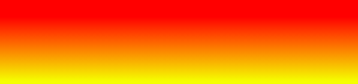
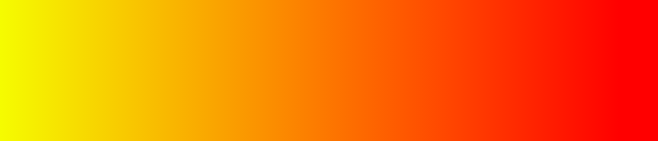

Sintaxe
Para conseguir um gradiente é necessário definirmos ao menos dois pontos de cores, podendo também definir a direção tomada pelo gradiente. Veja:
background-image: linear-gradient(direction, color-stop1, color-stop2, ...);
Default
Por padrão, a direção do gradiente linear é semre de baixo para cima, então se não definirmos a direção, e settarmos apenas os pontos de cor, ele resultará em algo mais ou menos assim:
#div {
background-image: linear-gradient(red, yellow);
}

Linear Horizontal
Para a construção de um gradiente horizontal, basta definirmos para qual direção nosso gradiente vai apontar, seja pra esquerda seja pra direita, usamos to left ou to right pra isso.
#div {
background-image: linear-gradient(to right, red , yellow);
}
Linear diagonal
Já para a criação de um gradiente podemos usar direções de forma semelhante à to right/to left, ou usarmos graus para isso
#grad {
background-image: linear-gradient(to bottom right, red, yellow);
}
#grad {
background-image: linear-gradient(-90deg, red, yellow);
}
